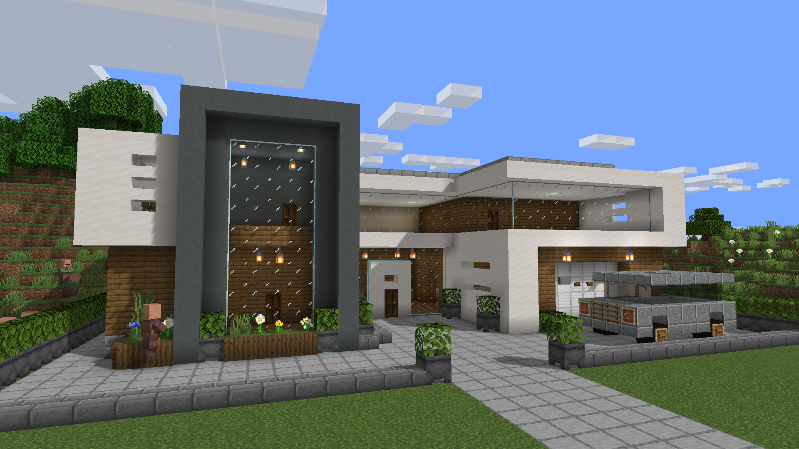

This self-maintaining residence is designed for those who value luxury and efficiency. By seamlessly integrating these advanced technologies, it offers an unparalleled living experience where your time is dedicated to enjoyment rather than upkeep. Welcome to a new standard in hassle-free elegance.
Embrace a new era of living with state-of-the-art technology that anticipates your needs. The house features smart sensors that adjust lighting, temperature, and even the music to perfectly match your mood. Everything is designed to enhance your comfort and simplify your life. Experience the future of home maintenance with self-repairing systems. Whether it’s minor wear and tear or unexpected issues, the home’s automated repair units address and fix problems efficiently, reducing the need for external maintenance services. The home’s system monitors all its components and sends predictive maintenance alerts before issues become significant problems. This proactive approach ensures that everything is running smoothly and efficiently.
The floor plan features distinct zones for different functions,
such as private sleeping areas, communal living spaces, and specialized zones for work or hobbies.
This zoning ensures that each area serves
its purpose effectively, providing both privacy and convenience.
The floor plan accommodates advanced smart home technologies seamlessly. Hidden wiring and discreet
technology hubs ensure that modern conveniences like automated lighting, climate control,
and security systems are both functional and aesthetically pleasing.
Every square foot is meticulously planned to maximize usability. Built-in storage solutions, such as cabinetry and closet systems, are seamlessly in tegrated into the design, eliminating clutter and optimizing space.

The house is designed to optimize energy usage and reduce waste.
For example, it uses sensors to adjust lighting and temperature.
Advanced smart homes can adapt to the routines and preferences of their
inhabitants, learning
from their behavior and making adjustments to improve daily life.
The smart house takes care of everyday tasks automatically. And
is highly comfortable living environment.